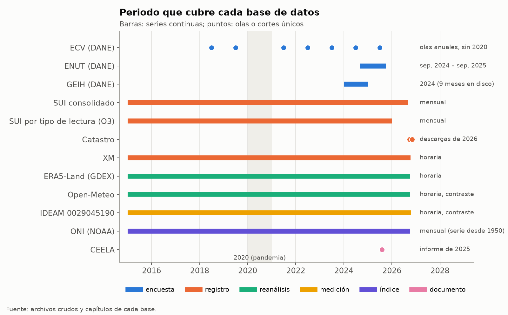

Bases de datos de la tesis#
Esta parte del libro describe cada base de datos que la tesis ha usado hasta ahora, muestra su análisis exploratorio (EDA) y explica paso a paso cómo se procesa hasta convertirse en un insumo del modelo. Este capítulo es la entrada: resume qué aporta cada base, qué periodo cubre y en qué paso de la propuesta entra, y fija las reglas comunes del procesamiento. Los capítulos siguientes tratan una base cada uno.
Las bases y su papel#
La tesis combina cuatro tipos de información. Las encuestas del DANE describen a los hogares (qué equipos tienen, cómo los usan y cuándo están en casa), pero son muestras pequeñas para cada estrato de Barranquilla. Los registros administrativos (SUI, catastro y XM) cubren a toda la población, pero no dicen nada del hogar ni de sus equipos. El clima viene de un reanálisis, contrastado con una estación medida. CEELA aporta los parámetros de la envolvente y de la climatización de edificios simulados.
Base |
Productor |
Tipo |
Unidad |
Periodo usado |
Para qué se usa |
Capítulo |
|---|---|---|---|---|---|---|
ECV |
DANE |
Encuesta por muestreo |
Hogar |
Olas 2018, 2019 y 2021 a 2025 |
Tenencia de A/C, ventilador y nevera, techo, hogar, horas de uso (2019) |
|
ENUT |
DANE |
Encuesta por muestreo |
Persona |
Septiembre de 2024 a septiembre de 2025 |
Presencia en la vivienda y sueño |
|
GEIH |
DANE |
Encuesta por muestreo |
Hogar y persona |
2024 |
Trabajo en la propia vivienda |
|
SUI |
Superintendencia de Servicios Públicos |
Registro administrativo |
Estrato y mes |
2015 a 2026 |
Suscriptores, consumo facturado, estacionalidad, lecturas reales |
|
Catastro |
Alcaldía de Barranquilla |
Registro administrativo |
Unidad de construcción |
Corte de 2026 |
Viviendas, geometría, posición frente a la cubierta, arquetipos |
|
XM |
Operador del mercado eléctrico |
Registro administrativo |
Mercado y hora |
2015 a 2026 |
Respuesta horaria de la demanda al calor |
|
ERA5-Land, Open-Meteo e IDEAM |
ECMWF (vía NCAR GDEX y Open-Meteo) e IDEAM |
Reanálisis y medición |
Hora |
2015 a 2026 |
Clima horario de todo el modelo |
|
ONI |
NOAA |
Índice climático |
Mes |
2015 a 2026 |
Fases de El Niño y La Niña |
|
CEELA |
UPME y consorcio CEELA |
Informe técnico |
Edificio simulado |
2025 |
Envolvente, zona climatizada, consigna y COP |
La Figura 16 muestra el periodo de cada base. Las series continuas (SUI, XM y clima) cubren de 2015 a 2026, mientras que las encuestas son cortes con un año de referencia, y el catastro es una sola fotografía de 2026. Por eso la tesis toma de las encuestas proporciones dentro de cada estrato y las lleva a la ciudad con los registros, que cubren todos los años.


Figura 16 Periodo que cubre cada base de datos. La franja gris marca 2020, que se excluye de la calibración por la pandemia.#
En qué paso de la propuesta entra cada base#
La Tabla 21 cruza las bases con las tres fases de la propuesta. El detalle de cada insumo, con su valor, su incertidumbre y su fuente, está en Insumos del modelo.
Base |
Fase 1: arquetipos |
Fase 2: simulación horaria |
Fase 3: calibración y validación |
|---|---|---|---|
ECV |
Paso 6 (material del techo), paso 7 (hogar) |
Paso 2 (tenencia), paso 5 (horas de A/C), pasos 6 y 7 (ventilador y nevera) |
Paso 5 (horas de uso) |
ENUT |
Paso 3 (presencia y sueño) |
||
GEIH |
Paso 3 (trabajo en casa) |
||
SUI |
Paso 9 (hogares por estrato) |
Pasos 1, 2, 4 y 5 (consumo, estacionalidad y Ecuación 9) |
|
Catastro |
Pasos 1 a 7 (todas las viviendas y los arquetipos) |
Paso 4 (geometría y posición) |
Paso 1 (expansión) |
XM |
Pasos 1 y 4 (compuerta horaria, blanco de validación) |
||
Clima |
Paso 3 (carga para el criterio de agrupamiento) |
Pasos 1 y 4 (clima horario, EPW y onda larga) |
Paso 2 (Ecuación 9) |
ONI |
Pasos 6 a 8 (escenario de El Niño) |
||
CEELA |
Paso 6 (envolvente) |
Pasos 2, 4 y 5 (zona climatizada, envolvente, consigna y COP) |
Reglas comunes del procesamiento#
Todas las bases se procesan con Python a partir de los archivos originales, sin editar nada a mano, y cada cifra del libro se puede reproducir con los scripts del repositorio (Reproducibilidad). Los principios que siguen valen para todas las bases, y cada capítulo explica solo lo que se aparta de ellos.
Las cifras de encuesta se ponderan con el factor de expansión de cada encuesta, y los tamaños de muestra se reportan sin ponderar. Las fórmulas de proporciones, medias y percentiles ponderados están en la sección de principios generales de Metodología.
De las encuestas se usan solo tasas dentro de cada estrato. La expansión a la ciudad se hace con los suscriptores del SUI o con las viviendas del catastro, que son registros completos, porque los pesos de la ECV dan demasiado peso al estrato 1.
La incertidumbre de las encuestas incluye el efecto del diseño muestral, que en la ECV 2024 se midió con los conglomerados de la muestra (Serie de tenencia, error de la encuesta e imputación).
Solo se publican agregados. Ninguna tabla, figura o archivo del repositorio contiene datos de un hogar, una persona o una vivienda, y las coordenadas del catastro solo aparecen agregadas en celdas con al menos 10 viviendas.
Los procesos aleatorios usan la semilla 42.
El año 2020 se excluye de la calibración por el cambio en la ocupación de las viviendas durante la pandemia.
Cuando un dato parece imposible o inconsistente, no se corrige en silencio. Se documenta en Datos sospechosos con la regla que lo trata, y la decisión entra al registro de supuestos (Supuestos).
Orden del procesamiento#
Las bases no se procesan de forma independiente, porque varias se apoyan en otras. El orden es el siguiente, y cada paso remite al capítulo que lo explica en detalle.
El clima horario se arma primero (ERA5-Land de GDEX con el rocío faltante rellenado desde Open-Meteo, contrastado con el IDEAM), porque lo usan el criterio de agrupamiento de la Fase 1, la compuerta horaria y la Ecuación 9 (Clima).
El SUI se depura y se agrega por estrato y mes, y sus suscriptores de diciembre fijan cuántos hogares hay en cada estrato y año (SUI).
Las olas de la ECV se procesan una por una con los mismos códigos de variable. Las tasas por estrato se postestratifican con los suscriptores del SUI y se suavizan entre olas en la serie de tenencia de A/C (ECV).
La ENUT y la GEIH dan los perfiles de presencia y de trabajo en casa por grupo de estrato (ENUT y GEIH).
El catastro se descarga por capas, se unen sus tablas y se limpian las viviendas residenciales. Con él se construyen la posición frente a la cubierta y los arquetipos, y se le imputa la probabilidad de tener A/C con la regresión de la ECV (Catastro y Arquetipos).
La demanda de XM se une al clima diario para la compuerta horaria (XM y Compuerta horaria).
El ONI clasifica cada mes como El Niño, La Niña o neutro, para los escenarios de la Fase 3 (El Niño y La Niña).
CEELA#
CEELA no es una base de datos sino un conjunto de tres informes técnicos con la línea base energética de las edificaciones de Colombia (UPME et al., 2025a, UPME et al., 2025b, UPME et al., 2025c), y por eso no tiene un análisis exploratorio propio. La tesis toma de esos informes los parámetros de la envolvente, la zona climatizada, la consigna de refrigeración y el COP de los cuatro edificios representativos de Barranquilla. Su procesamiento consistió en leer las tablas de los informes, traducir las tipologías VIS y no VIS a estratos (supuesto S15) y tomar el centro de cada rango, como se explica en Línea base de CEELA.